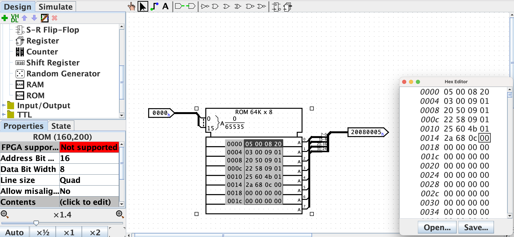

Assignment 7
Our MIPS CPU Design in Logisim
So far in class, we’ve designed a partial MIPS CPU.
If you haven’t already, add on to your datapath so that it looks like this one.
Assignment
Update your control unit to support add, addi, sub, and, xor, andi, ori, xori, slt, and slti.
Write a MIPS program in MARS with these instructions and look at the bit-pattern in the code column of the Text Segment after it has been assembled. Copy this by hand into your CPU’s instruction memory.

Simulate it. Use the viewRegisterNum and RegisterContents pins on the register file to view the contents of different registers as it executes, and convince yourself that everything is working correctly.
Submit the following
- A screenshot of the Text Segment on the Execute tab from MARS which shows the MIPS program that you used to test your CPU. This MIPS program doesn’t have to do anything special, but it should have some registers with non-zero values that depend on multiple instructions executing successfully. For example, in the program above, the value in
$12depends on the first 5 instructions working correctly (and$13depends on all 6 - but is harder to verify since it has a 0/1 value). - A screenshot of your control unit truth table that you used to generate your Control unit
- A screenshot of the circuit Logisim generated for your control unit
- A screenshot of your CPU with a value displayed on the RegisterContents pin. You should pick a register whose value depends on several instructions computing successfully (and more than just
addandaddiwhich we did in class) just the ones we did in class. - A short explanation describing why the displayed value on RegisterContents is correct.
Do not zip up your files when you submit them
Grading
This is an 8-point assignment. See the rubric from the syllabus.
Bonus Points
You can earn up to 4 points of extra credit by implementing lw, sw, beq, and bne in your CPU (1 point each). I’ll also entertain points for other kinds of instructions like shifting or jumping instructions. If you do this, make sure to describe what you did for extra credit, and show that you verified it works in a similar way to how you showed the other instructions work.
What to turn in
Turn in the document described in the Assignment section.
Where to turn it in
Submit your document of images to the Assignment 7 hand-in form on Blackboard.